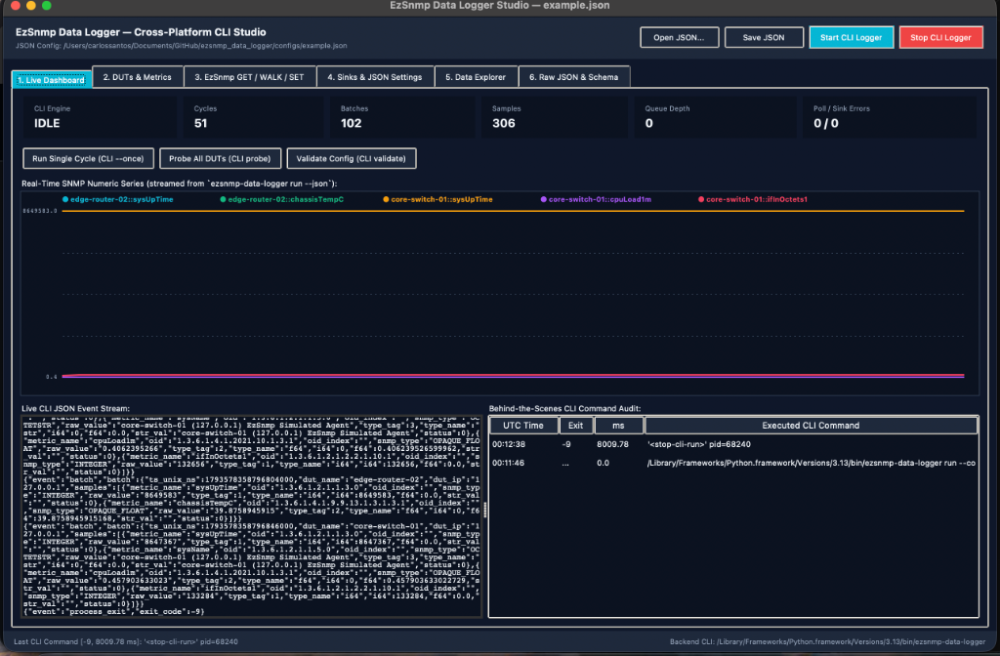

Cross-Platform GUI User Guide¶
ezsnmp_data_logger provides a modern, responsive Graphical User Interface across Linux, macOS, and Windows that interacts strictly with the CLI behind the scenes via JSON payloads and child subprocesses.
Architecture: The Behind-the-Scenes CLI Bridge¶
To guarantee that the GUI and CLI always produce 100% identical results and never diverge, the GUI contains zero duplicated SNMP or storage logic.
Every user action in the interface (clicking a button, saving a setting, running a poll, probing a DUT) delegates to CliSubprocessBridge. The bridge spawns ezsnmp-data-logger <subcommand> --json as a child process, parses the structured JSON response, and records the event in the Behind-the-Scenes CLI Command Audit Trail.
+-------------------------------------------------------------------------+
| GUI Frontend (Native Tkinter Desktop Studio or Browser Web Studio) |
+------------------------------------+------------------------------------+
|
Executes: ezsnmp-data-logger <cmd> --json
v
+-------------------------------------------------------------------------+
| CliSubprocessBridge (Subprocess Execution & Audit Logger) |
| - Captures: UTC Time | Subcommand | Exit Code | Latency (ms) |
| - Streams: Live NDJSON event lines from `run --json` |
+------------------------------------+------------------------------------+
|
v
+-------------------------------------------------------------------------+
| C++17 Telemetry Engine (EzSnmpPoller -> BoundedQueue -> Sinks) |
+-------------------------------------------------------------------------+
Two Cross-Platform Frontends¶
The GUI is configured in your JSON settings under "gui": { "frontend": "auto" | "tk" | "web" } (or via the --frontend command-line flag):
Native Desktop Studio (**``tk``):** - Built on Python’s cross-platform standard-library
tkinter.ttk(Linux X11/Wayland, macOS Aqua, Windows Win32). - Zero external GUI or WebKit dependencies required. - Features dark and light themes, real-timeCanvastelemetry charts, interactive series checkbuttons, clickable canvas legends, and instant responsive layouts.Browser Web Studio (**``web``):** - Built on Python’s standard-library
http.server.ThreadingHTTPServer+ responsive HTML5/SVG/CSS. - Zero external web frameworks (no Flask, Django, or FastAPI required). - Ideal for headless servers, Docker containers, remote clouds, WSL2, or SSH port-forwarding.
Launching the GUI¶
# Auto-detect: launches native Desktop Tkinter Studio if a graphical display exists, else Web Studio
ezsnmp-data-logger gui --config configs/example.json
# Force Native Desktop Tkinter Studio
ezsnmp-data-logger-gui --config configs/example.json --frontend tk
# Force Browser Web Studio on specified port
ezsnmp-data-logger-gui --config configs/example.json --frontend web --port 8765
# Launch on a remote headless server bound to all network interfaces
ezsnmp-data-logger-gui --config configs/example.json --frontend web --host 0.0.0.0 --port 8765 --no-browser
# Launch in Spanish using the built-in 'es' catalog
ezsnmp-data-logger-gui --config configs/example.json --locale es
# Launch using a custom translation locale file
ezsnmp-data-logger-gui --config configs/example.json --locale-file /path/to/my_locale.json
Detailed Tab-by-Tab Walkthrough¶
Tab 1: Live Dashboard¶
The primary monitoring cockpit for real-time telemetry observation:


EzSnmp Data Logger Studio — Live Dashboard monitoring real-time telemetry streaming from the CLI engine.¶
Telemetry KPI Grid: - CLI State: Indicates whether the background CLI polling engine is
IDLEorRUNNING. - Cycles: Total number of completed polling cycles. - Batches: Number of batches successfully dispatched to sinks. - Samples: Total individual numeric SNMP telemetry data points ingested. - Queue Depth: Current count of batches in the thread-safe bounded buffer. - Poll / Sink Errors: Error counter (e.g.0 / 0) tracking network timeouts or storage write failures.One-Click Action Buttons: - Run Single Cycle (CLI ``–once``): Spawns
ezsnmp-data-logger run --once --jsonto execute a single cycle across all DUTs, persisting data immediately. - Probe All DUTs (CLI ``probe``): Tests reachability of all configured devices without writing to persistent sinks. - Validate Config (CLI ``validate``): Runs full schema and credential validation on the active JSON file.Real-Time Telemetry Chart with Selectable Series: - Renders live numeric SNMP telemetry streamed directly from child CLI process events. - Select One or Many Series: Use the checkbuttons (Desktop Tk) or filter chips/pills (Web Studio) above the chart to choose exactly which metrics to display. - Automatic Y-Axis Rescaling: When large-magnitude counters (e.g.
sysUpTime~8,600,000) are deselected, the Y-axis immediately rescales to lower-magnitude metrics (e.g.cpuLoad1m~0.4,chassisTempC~40°C), making subtle variations clearly visible. - Select All & Clear All: Quickly toggle visibility across all available metrics. - Canvas Legend Interaction: In Desktop Tkinter, clicking any legend entry directly on the chart canvas toggles its visibility.Live CLI JSON Event Stream Console: - Live console view displaying the exact NDJSON event lines streamed from the child
ezsnmp-data-logger run --jsonengine process.Behind-the-Scenes CLI Command Audit Trail: - Live audit table tracking every action taken in the GUI with columns for UTC Time, Exit Code, Duration (ms), and the exact Executed CLI Command.
Tab 2: DUTs & Metrics¶
Inspect and configure network Devices Under Test (DUTs):
Device Parameters: View and edit device names, IP addresses/hostnames, UDP ports (default 161), timeout intervals, and retry limits.
SNMP Version & Credentials: - SNMPv1 & SNMPv2c: Community strings (e.g.
public). - SNMPv3: Security name, authentication protocol (MD5orSHA), authentication passphrases, privacy protocol (DESorAES), privacy keys, and security levels (noAuthNoPriv,authNoPriv,authPriv).Metric Definitions: Configure metric names, target OIDs, ASN.1 data types, and collection rates per device.
Tab 3: EzSnmp GET / WALK / SET Workbench¶
An interactive diagnostic laboratory to run ad-hoc SNMP operations against any configured device:
Operation Selector: Choose between
get,getnext,walk,bulkget,bulkwalk, andset.Target OID Field: Enter standard MIB OIDs or dotted numeric strings (e.g.
1.3.6.1.2.1.1.1.0).Record Checkbox: When checked, passes
--recordto the CLI, storing the returned samples directly into your configured persistence sinks.Results Table: Displays returned variable bindings including OID, OID index, ASN.1 type tag, human-readable type name, raw value, and status.
Tab 4: Sinks & JSON Settings¶
Configure telemetry persistence destinations and GUI preferences:
Storage Sinks: - SQLite3: Embedded WAL-mode database path with automatic schema migrations. - JSONL: Newline-delimited JSON log file destination. - CSV: Comma-separated values log destination with timestamp headers. - Prometheus Exporter: Embedded HTTP exposition endpoint (e.g.
0.0.0.0:9100/metrics) with gauge and counter metrics. - PostgreSQL / TimescaleDB: Connection URI for hypertable time-series storage.GUI Preferences: - Theme: Switch between high-contrast Dark and clean Light themes. - Refresh Interval: Configure the polling state UI refresh rate (default 1000 ms). - Language / Locale: Switch UI language live via the locale dropdown.
Tab 5: Data Explorer¶
Search and inspect historical telemetry rows without leaving the application:
Query recent telemetry records directly from the embedded SQLite3 database.
Filter by Device Under Test (DUT) and Metric Name.
View timestamp (Unix nanoseconds and ISO-8601), device name, metric name, OID, SNMP data type, formatted value, and storage sink source.
Tab 6: Raw JSON & Schema Validator¶
Advanced direct configuration editing:
Live Syntax Validation: Validates JSON syntax in real time against the embedded C++ JSON schema validator.
Template Selector: Load built-in starter templates (
demo,minimal,all_sinks).Save & Apply: Saves changes directly to disk and reloads the engine state.
Custom Branding Icons & Desktop Application Launchers¶
ezsnmp_data_logger includes a custom branding icon and favicon suite, ensuring neither Desktop Studio nor Web Studio display generic Python or browser tab icons:
Browser Web Studio Favicons: Vector SVG (
favicon.svg), Windows ICO (favicon.ico), multi-resolution PNGs (favicon-32x32.png,favicon-16x16.png), and Apple Touch Icon (apple-touch-icon.png).Desktop Tkinter Window & Dock Icon: Custom window titlebar icon (
app_icon.png/app_icon.ico) and automatic macOS Dock icon configuration via standard Cocoa/AppKit integration (zero extra dependencies).Desktop Application Launcher Installer: Install a native launcher with custom icons for your operating system:
# Install native launcher (~/Applications on macOS, ~/.local/share/applications on Linux)
ezsnmp-data-logger-gui --install-launcher
# Or specify a custom destination directory (e.g. ~/Desktop)
ezsnmp-data-logger-gui --install-launcher --launcher-dir ~/Desktop
Multi-Language Localization (locale.json)¶
All user-facing UI strings (titles, buttons, status bars, tabs, KPI cards, table headers, form labels, and dialog messages) across both Desktop Studio and Web Studio are externalized into ezsnmp_data_logger/gui/locale.json.
Each key is mapped to an object containing language translations:
{
"buttons.start_logger": {
"en": "Start CLI Logger",
"es": "Iniciar Logger CLI"
},
"buttons.stop_logger": {
"en": "Stop CLI Logger"
},
"labels.visible_series": {
"en": "Visible Series:"
},
"buttons.select_all": {
"en": "Select All"
},
"buttons.clear_all": {
"en": "Clear All"
}
}
Baseline Language: Standardizes on English (
"en") as the primary baseline language for all keys. Additional language translations (e.g."es","fr") can be added per key as needed.Persistent Configuration: Configure your preferred language directly in the JSON configuration under
"gui": { "locale": "en" }(or"locale_file": "path/to/custom.json").Desktop Studio Switching: Switch between languages live via the combobox in Tab 4 (Sinks & JSON Settings).
Browser Studio Switching: Switch languages instantly from the language dropdown in the top navigation toolbar.
Graceful Fallback: Any key or translation not defined in a custom language file automatically falls back to the canonical English string.